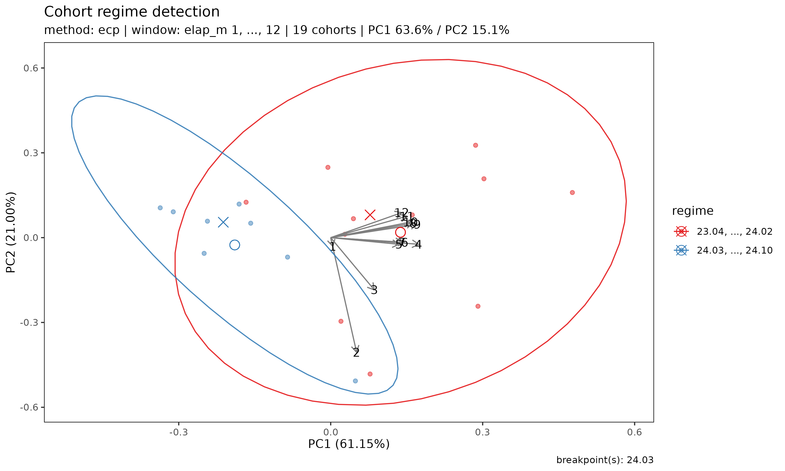

Detecting regime shifts across underwriting cohorts
Source:vignettes/regime-detection.Rmd
regime-detection.RmdMotivation
When analysing a portfolio of long-duration health insurance cohorts, a practitioner often asks two questions:
- Are recent underwriting cohorts behaving differently from earlier cohorts?
- If so, when did the change happen?
In long-term insurance, the cohort patterns most commonly break under one of four triggers:
- Drastic premium adjustment — large up- or down-revision of rates
- Product coverage content change — restructuring of benefits, exclusions, or term
- Sum insured limit change — adjustment of per-policy maximum
- Underwriting guideline change — eligibility, declarations, or loading rule revisions
The bundled experience dataset’s SUR coverage carries a
synthetic 2024-04 break representing one of these triggers, so the
demonstration below has a clear shift for
detect_cohort_regime() to find.
A visual inspection of plot(tri_sur) can suggest that
recent cohorts have lower early loss ratios than older ones, but
eye-balling a bundle of trajectories is an unreliable way to locate a
structural shift — especially when observation windows differ across
cohorts.
detect_cohort_regime() answers both questions in one
call. It treats each underwriting cohort as a feature vector (its
trajectory over development periods 1, ..., K), orders
cohorts by underwriting date, and applies a change-point or clustering
method to the resulting multivariate sequence.
Data and setup
library(lossratio)
data(experience)
exp <- as_experience(experience)
tri_sur <- build_triangle(exp[cv_nm == "SUR"], cv_nm)Detecting regimes
The default method is "ecp", a non-parametric
multivariate change-point algorithm that determines the number of
regimes from the data:
r <- detect_cohort_regime(tri_sur, K = 12, method = "ecp")
r
#> <CohortRegime>
#> method : ecp
#> value_var : clr
#> window (K) : elap_m 1, ..., 12
#> cohorts : 19 analysed (11 dropped)
#> regimes : 2
#> breakpoints : 24.03
#> PC1 / PC2 : 63.6% / 15.1%The window K controls how many development periods
define the cohort feature vector. Only cohorts observed for at least
K periods are analysed; cohorts with shorter windows are
dropped. Increasing K captures more of the trajectory but
drops more recent cohorts.
Summary and per-regime membership
summary(r)
#> Cohort regime detection summary
#> method : ecp
#> value_var : clr
#> window : elap_m 1, ..., 12
#> cohorts : 19 analysed (11 dropped)
#>
#> Regimes (2):
#> 1: 23.04, ..., 24.02 (11 cohorts)
#> 2: 24.03, ..., 24.10 (8 cohorts)
#>
#> Breakpoints: 24.03
r$labels
#> cohort regime regime_id
#> <Date> <fctr> <int>
#> 1: 2023-04-01 23.04, ..., 24.02 1
#> 2: 2023-05-01 23.04, ..., 24.02 1
#> 3: 2023-06-01 23.04, ..., 24.02 1
#> 4: 2023-07-01 23.04, ..., 24.02 1
#> 5: 2023-08-01 23.04, ..., 24.02 1
#> 6: 2023-09-01 23.04, ..., 24.02 1
#> 7: 2023-10-01 23.04, ..., 24.02 1
#> 8: 2023-11-01 23.04, ..., 24.02 1
#> 9: 2023-12-01 23.04, ..., 24.02 1
#> 10: 2024-01-01 23.04, ..., 24.02 1
#> 11: 2024-02-01 23.04, ..., 24.02 1
#> 12: 2024-03-01 24.03, ..., 24.10 2
#> 13: 2024-04-01 24.03, ..., 24.10 2
#> 14: 2024-05-01 24.03, ..., 24.10 2
#> 15: 2024-06-01 24.03, ..., 24.10 2
#> 16: 2024-07-01 24.03, ..., 24.10 2
#> 17: 2024-08-01 24.03, ..., 24.10 2
#> 18: 2024-09-01 24.03, ..., 24.10 2
#> 19: 2024-10-01 24.03, ..., 24.10 2Visualisation
plot(r) produces a PCA scatter of cohort trajectories
coloured by detected regime. If the regimes are well-separated in PCA
space, the structural shift is visually confirmed:
plot(r)
Arrows indicate the loadings of each development-period feature on the PC axes — useful for reading how the regimes differ (e.g. whether the shift primarily affects early or late development).
Choice of method
"ecp"— preferred default. Multivariate, non-parametric, auto-detects the number of regimes at a given significance level. Slightly slower than the alternatives but requires no a priori choice ofn_regimes."pelt"— fast univariate change-point detection applied to the first principal component. May return multiple breakpoints and is useful when the trajectory variation is dominated by one axis (checkPC1 %in theprint()output — if > 70%, PELT is reliable; if much lower, prefer"ecp")."hclust"— Ward hierarchical clustering on the scaled feature matrix, cut ton_regimesclusters (default2). Ignores chronological order and is best used as a sanity check: if the chronological methods locate a breakpoint at timetandhclustproduces the same two groups (all pre-tin one cluster, all post-tin the other), the shift is structural rather than an artefact of the method.
In practice, agreement across all three methods — as in the SUR
example above, where "ecp", "pelt", and
"hclust" all locate 24.04 as the regime
boundary — is strong evidence of a real underwriting/rate shift.
Forcing the number of regimes
If you want to compare a fixed number of regimes — for example,
two-vs-three regime hypotheses — pass n_regimes:
r2 <- detect_cohort_regime(tri_sur, K = 12, method = "ecp", n_regimes = 3)
summary(r2)
#> Cohort regime detection summary
#> method : ecp
#> value_var : clr
#> window : elap_m 1, ..., 12
#> cohorts : 19 analysed (11 dropped)
#>
#> Regimes (3):
#> 1: 23.04, ..., 23.06 (3 cohorts)
#> 2: 23.07, ..., 24.02 (8 cohorts)
#> 3: 24.03, ..., 24.10 (8 cohorts)
#>
#> Breakpoints: 23.07, 24.03For "ecp" and "pelt",
n_regimes is a request (the algorithm will return up to
that many regimes if supported by the data). For "hclust",
it is a hard cut.
Relation to fit_lr()
detect_cohort_regime() is a preprocessing
diagnostic, not a modification of the fit_lr()
framework. Its output is useful in two ways:
Stratified fitting: if two clearly distinct regimes are detected, fitting
fit_lr()separately on each regime subset often yields sharper stable-CLR estimates than a pooled fit.Rate-change documentation: a detected breakpoint provides a data-driven anchor for the preprocessing recommendations outlined in the Limitations section of the companion paper (premium on-leveling or exposure decomposition
V = C^P / r).